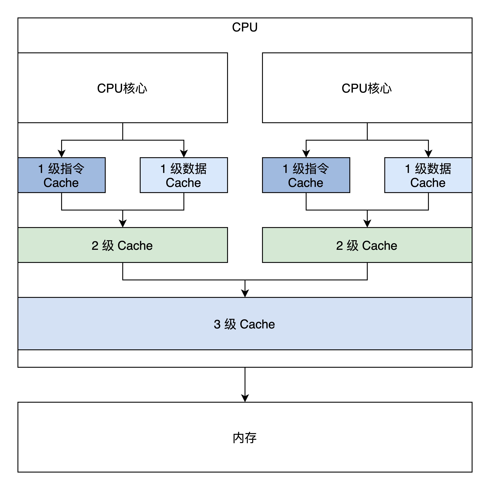

- 00 开篇词 为什么要学写一个操作系统？.md.html
- 00 编辑手记 升级认知，迭代自己的操作系统.md.html
- 01 程序的运行过程：从代码到机器运行.md.html
- 02 几行汇编几行C：实现一个最简单的内核.md.html
- 03 黑盒之中有什么：内核结构与设计.md.html
- 04 震撼的Linux全景图：业界成熟的内核架构长什么样？.md.html
- 05 CPU工作模式：执行程序的三种模式.md.html
- 06 虚幻与真实：程序中的地址如何转换？.md.html
- 07 Cache与内存：程序放在哪儿？.md.html
- 08 锁：并发操作中，解决数据同步的四种方法.md.html
- 09 瞧一瞧Linux：Linux的自旋锁和信号量如何实现？.md.html
- 10 设置工作模式与环境（上）：建立计算机.md.html
- 11 设置工作模式与环境（中）：建造二级引导器.md.html
- 12 设置工作模式与环境（下）：探查和收集信息.md.html
- 13 第一个C函数：如何实现板级初始化？.md.html
- 14 Linux初始化（上）：GRUB与vmlinuz的结构.md.html
- 15 Linux初始化（下）：从_start到第一个进程.md.html
- 16 划分土地（上）：如何划分与组织内存？.md.html
- 17 划分土地（中）：如何实现内存页面初始化？.md.html
- 18 划分土地（下）：如何实现内存页的分配与释放？.md.html
- 19 土地不能浪费：如何管理内存对象？.md.html
- 20 土地需求扩大与保障：如何表示虚拟内存？.md.html
- 21 土地需求扩大与保障：如何分配和释放虚拟内存？.md.html
- 22 瞧一瞧Linux：伙伴系统如何分配内存？.md.html
- 23 瞧一瞧Linux：SLAB如何分配内存？.md.html
- 24 活动的描述：到底什么是进程？.md.html
- 25 多个活动要安排（上）：多进程如何调度？.md.html
- 26 多个活动要安排（下）：如何实现进程的等待与唤醒机制？.md.html
- 27 瞧一瞧Linux：Linux如何实现进程与进程调度_.md.html
- 28 部门分类：如何表示设备类型与设备驱动？.md.html
- 29 部门建立：如何在内核中注册设备？.md.html
- 30 部门响应：设备如何处理内核I_O包？.md.html
- 31 瞧一瞧Linux：如何获取所有设备信息？.md.html
- 32 仓库结构：如何组织文件_.md.html
- 33 仓库划分：文件系统的格式化操作.md.html
- 34 仓库管理：如何实现文件的六大基本操作？.md.html
- 35 瞧一瞧Linux：虚拟文件系统如何管理文件？.md.html
- 36 从URL到网卡：如何全局观察网络数据流动？.md.html
- 37 从内核到应用：网络数据在内核中如何流转.md.html
- 38 从单排到团战：详解操作系统的宏观网络架构.md.html
- 39 瞧一瞧Linux：详解socket实现与网络编程接口.md.html
- 40 瞧一瞧Linux：详解socket的接口实现.md.html
- 41 服务接口：如何搭建沟通桥梁？.md.html
- 42 瞧一瞧Linux：如何实现系统API？.md.html
- 43 虚拟机内核：KVM是什么？.md.html
- 44 容器：如何理解容器的实现机制？.md.html
- 45 ARM新宠：苹果的M1芯片因何而快？.md.html
- 46 AArch64体系：ARM最新编程架构模型剖析.md.html
- LMOS来信：第二季课程带你“手撕”计算机基础.md.html
- 大咖助场 以无法为有法，以无限为有限.md.html
- 用户故事 yiyang：我的上机实验“爬坑指南”.md.html
- 用户故事 成为面向“知识库”的工程师.md.html
- 用户故事 技术人如何做选择，路才越走越宽？.md.html
- 用户故事 操作系统发烧友：看不懂？因为你没动手.md.html
- 用户故事 用好动态调试，助力课程学习.md.html
- 用户故事 艾同学：路虽远，行则将至.md.html
- 结束语 生活可以一地鸡毛，但操作系统却是心中的光.md.html
- 捐赠
07 Cache与内存：程序放在哪儿？
你好，我是LMOS。
在前面的课程里，我们已经知道了CPU是如何执行程序的，也研究了程序的地址空间，这里我们终于到了程序的存放地点——内存。
你知道什么是Cache吗？在你心中，真实的内存又是什么样子呢？今天我们就来重新认识一下Cache和内存，这对我们利用Cache写出高性能的程序代码和实现操作系统管理内存，有着巨大的帮助。
通过这节课的内容，我们一起来看看内存到底是啥，它有什么特性。有了这个认识，你就能更加深入地理解我们看似熟悉的局部性原理，从而搞清楚，为啥Cache是解决内存瓶颈的神来之笔。最后，我还会带你分析x86平台上的Cache，规避Cache引发的一致性问题，并让你掌握获取内存视图的方法。
那话不多说，带着刚才的问题，我们正式进入今天的学习吧！
从一段“经典”代码看局部性原理
不知道，你还记不记得C语言打印九九乘法表的代码，想不起来也没关系，下面我把它贴出来，代码很短，也很简单，就算你自己写一个也用不了一分钟，如下所示。
#include <stdio.h>
int main(){
int i,j;
for(i=1;i<=9;i++){
for(j=1;j<=i;j++){
printf("%d*%d=%2d ",i,j,i*j);
}
printf("\n");
}
return 0;
}
我们当然不是为了研究代码本身，这个代码非常简单，这里我们主要是观察这个结构，代码的结构主要是顺序、分支、循环，这三种结构可以写出现存所有算法的程序。
我们常规情况下写的代码是顺序和循环结构居多。上面的代码中有两重循环，内层循环的次数受到外层循环变量的影响。就是这么简单，但是越简单的东西越容易看到本质。
可以看到，这个代码大数时间在执行一个乘法计算和调用一个printf函数，而程序一旦编译装载进内存中，它的地址就确定了。也就是说，CPU大多数时间在访问相同或者与此相邻的地址，换句话说就是：CPU大多数时间在执行相同的指令或者与此相邻的指令。这就是大名鼎鼎的程序局部性原理。
内存
明白了程序的局部性原理之后，我们再来看看内存。你或许感觉这跨越有点大，但是只有明白了内存的结构和特性，你才能明白程序局部性原理的应用场景和它的重要性。
内存也可称为主存，不管硬盘多大、里面存放了多少程序和数据，只要程序运行或者数据要进行计算处理，就必须先将它们装入内存。我们先来看看内存长什么样（你也可以上网自行搜索），如下图所示。

从上图可以看到在PCB板上有内存颗粒芯片，主要是用来存放数据的。SPD芯片用于存放内存自身的容量、频率、厂商等信息。还有最显眼的金手指，用于连接数据总线和地址总线，电源等。
其实从专业角度讲，内存应该叫DRAM，即动态随机存储器。内存储存颗粒芯片中的存储单元是由电容和相关元件做成的，电容存储电荷的多、少代表数字信号0和1。
而随着时间的流逝，电容存在漏电现象，这导致电荷不足，就会让存储单元的数据出错，所以DRAM需要周期性刷新，以保持电荷状态。DRAM结构较简单且集成度很高，通常用于制造内存条中的储存颗粒芯片。
虽然内存技术标准不断更新，但是储存颗粒的内部结构没有本质改变，还是电容存放电荷，标准看似更多，实际上只是提升了位宽、工作频率，以及传输时预取的数据位数。
比如DDR SDRAM，即双倍速率同步动态随机存储器，它使用2.5V的工作电压，数据位宽为64位，核心频率最高为166MHz。下面简称DDR内存，它表示每一个时钟脉冲传输两次数据，分别在时钟脉冲的上升沿和下降沿各传输一次数据，因此称为双倍速率的SDRAM。
后来的DDR2、DDR3、DDR4也都在核心频率和预取位数上做了提升。最新的DDR4采用1.2V工作电压，数据位宽为64位，预取16位数据。DDR4取消了双通道机制，一条内存即为一条通道，工作频率最高可达4266MHz，单根DDR4内存的数据传输带宽最高为34GB/s。
其实我们无需过多关注内存硬件层面的技术规格标准，重点需要关注的是，内存的速度还有逻辑上内存和系统的连接方式和结构，这样你就能意识到内存有多慢，还有是什么原因导致内存慢的。
我们还是画幅图说明吧，如下图所示。
结合图片我们看到，控制内存刷新和内存读写的是内存控制器，而内存控制器集成在北桥芯片中。传统方式下，北桥芯片存在于系统主板上，而现在由于芯片制造工艺的升级，芯片集成度越来越高，所以北桥芯片被就集成到CPU芯片中了，同时这也大大提升了CPU访问内存的性能。
而作为软件开发人员，从逻辑上我们只需要把内存看成一个巨大的字节数组就可以，而内存地址就是这个数组的下标。
CPU到内存的性能瓶颈
尽管CPU和内存是同时代发展的，但CPU所使用技术工艺的材料和内存是不同的，侧重点也不同，价格也不同。如果内存使用CPU的工艺和材料制造，那内存条的昂贵程度会超乎想象，没有多少人能买得起。
由于这些不同，导致了CPU和内存条的数据吞吐量天差地别。尽管最新的DDR4内存条带宽高达34GB/s，然而这相比CPU的数据吞吐量要慢上几个数量级。再加上多核心CPU同时访问内存，会导致总线争用问题，数据吞吐量会进一步下降。
CPU要数据，内存一时给不了怎么办？CPU就得等，通常CPU会让总线插入等待时钟周期，直到内存准备好，到这里你就会发现，无论CPU的性能多高都没用，而内存才是决定系统整体性能的关键。显然依靠目前的理论直接提升内存性能，达到CPU的同等水平，这是不可行的，得想其它的办法。
Cache
让我们重新回到前面的场景中，回到程序的局部性原理，它告诉我们：CPU大多数时间在访问相同或者与此相邻的地址。那么，我们立马就可以想到用一块小而快的储存器，放在CPU和内存之间，就可以利用程序的局部性原理来缓解CPU和内存之间的性能瓶颈。这块小而快的储存器就是Cache，即高速缓存。
Cache中存放了内存中的一部分数据，CPU在访问内存时要先访问Cache，若Cache中有需要的数据就直接从Cache中取出，若没有则需要从内存中读取数据，并同时把这块数据放入Cache中。但是由于程序的局部性原理，在一段时间内，CPU总是能从Cache中读取到自己想要的数据。
Cache可以集成在CPU内部，也可以做成独立的芯片放在总线上，现在x86 CPU和ARM CPU都是集成在CPU内部的。其逻辑结构如下图所示。
Cache主要由高速的静态储存器、地址转换模块和Cache行替换模块组成。
Cache会把自己的高速静态储存器和内存分成大小相同的行，一行大小通常为32字节或者64字节。Cache和内存交换数据的最小单位是一行，为方便管理，在Cache内部的高速储存器中，多个行又会形成一组。
除了正常的数据空间外，Cache行中还有一些标志位，如脏位、回写位，访问位等，这些位会被Cache的替换模块所使用。
Cache大致的逻辑工作流程如下。
1.CPU发出的地址由Cache的地址转换模块分成3段：组号，行号，行内偏移。
2.Cache会根据组号、行号查找高速静态储存器中对应的行。如果找到即命中，用行内偏移读取并返回数据给CPU，否则就分配一个新行并访问内存，把内存中对应的数据加载到Cache行并返回给CPU。写入操作则比较直接，分为回写和直通写，回写是写入对应的Cache行就结束了，直通写则是在写入Cache行的同时写入内存。
3.如果没有新行了，就要进入行替换逻辑，即找出一个Cache行写回内存，腾出空间，替换行有相关的算法，替换算法是为了让替换的代价最小化。例如，找出一个没有修改的Cache行，这样就不用把它其中的数据回写到内存中了，还有找出存在时间最久远的那个Cache行，因为它大概率不会再访问了。
以上这些逻辑都由Cache硬件独立实现，软件不用做任何工作，对软件是透明的。
Cache带来的问题
Cache虽然带来性能方面的提升，但同时也给和硬件和软件开发带来了问题，那就是数据一致性问题。
为了搞清楚这个问题，我们必须先搞清楚Cache在硬件层面的结构，下面我画了x86 CPU的Cache结构图：

这是一颗最简单的双核心CPU，它有三级Cache，第一级Cache是指令和数据分开的，第二级Cache是独立于CPU核心的，第三级Cache是所有CPU核心共享的。
下面来看看Cache的一致性问题，主要包括这三个方面.
1.一个CPU核心中的指令Cache和数据Cache的一致性问题。- 2.多个CPU核心各自的2级Cache的一致性问题。- 3.CPU的3级Cache与设备内存，如DMA、网卡帧储存，显存之间的一致性问题。这里我们不需要关注这个问题。
我们先来看看CPU核心中的指令Cache和数据Cache的一致性问题，对于程序代码运行而言，指令都是经过指令Cache，而指令中涉及到的数据则会经过数据Cache。
所以，对自修改的代码（即修改运行中代码指令数据，变成新的程序）而言，比如我们修改了内存地址A这个位置的代码（典型的情况是Java运行时编译器），这个时候我们是通过储存的方式去写的地址A，所以新的指令会进入数据Cache。
但是我们接下来去执行地址A处的指令的时候，指令Cache里面可能命中的是修改之前的指令。所以，这个时候软件需要把数据Cache中的数据写入到内存中，然后让指令Cache无效，重新加载内存中的数据。
再来看看多个CPU核心各自的2级Cache的一致性问题。从上图中可以发现，两个CPU核心共享了一个3级Cache。比如第一个CPU核心读取了一个A地址处的变量，第二个CPU也读取A地址处的变量，那么第二个CPU核心是不是需要从内存里面经过第3、2、1级Cache再读一遍，这个显然是没有必要的。
在硬件上Cache相关的控制单元，可以把第一个CPU核心的A地址处Cache内容直接复制到第二个CPU的第2、1级Cache，这样两个CPU核心都得到了A地址的数据。不过如果这时第一个CPU核心改写了A地址处的数据，而第二个CPU核心的2级Cache里面还是原来的值，数据显然就不一致了。
为了解决这些问题，硬件工程师们开发了多种协议，典型的多核心Cache数据同步协议有MESI和MOESI。MOESI和MESI大同小异，下面我们就去研究一下MESI协议。
Cache的MESI协议
MESI协议定义了4种基本状态：M、E、S、I，即修改（Modified）、独占（Exclusive）、共享（Shared）和无效（Invalid）。下面我结合示意图，给你解释一下这四种状态。
1.M修改（Modified）：当前Cache的内容有效，数据已经被修改而且与内存中的数据不一致，数据只在当前Cache里存在。比如说，内存里面X=5，而CPU核心1的Cache中X=2，Cache与内存不一致，CPU核心2中没有X。
- E独占（Exclusive）：当前Cache中的内容有效，数据与内存中的数据一致，数据只在当前Cache里存在；类似RAM里面X=5，同样CPU核心1的Cache中X=5（Cache和内存中的数据一致），CPU核心2中没有X。

- S共享（Shared）：当前Cache中的内容有效，Cache中的数据与内存中的数据一致，数据在多个CPU核心中的Cache里面存在。例如在CPU核心1、CPU核心2里面Cache中的X=5，而内存中也是X=5保持一致。

- 无效（Invalid）：当前Cache无效。前面三幅图Cache中没有数据的那些，都属于这个情况。
最后还要说一下Cache硬件，它会监控所有CPU上Cache的操作，根据相应的操作使得Cache里的数据行在上面这些状态之间切换。Cache硬件通过这些状态的变化，就能安全地控制各Cache间、各Cache与内存之间的数据一致性了。
这里不再深入探讨MESI协议了，感兴趣的话你可以自行拓展学习。这里只是为了让你明白，有了Cache虽然提升了系统性能，却也带来了很多问题，好在这些问题都由硬件自动完成，对软件而言是透明的。
不过看似对软件透明，这却是有代价的，因为硬件需要耗费时间来处理这些问题。如果我们编程的时候不注意，不能很好地规避这些问题，就会引起硬件去维护大量的Cache数据同步，这就会使程序运行的效能大大下降。
开启Cache
前面我们研究了大量的Cache底层细节和问题，就是为了使用Cache，目前Cache已经成为了现代计算机的标配，但是x86 CPU上默认是关闭Cache的，需要在CPU初始化时将其开启。
在x86 CPU上开启Cache非常简单，只需要将CR0寄存器中CD、NW位同时清0即可。CD=1时表示Cache关闭，NW=1时CPU不维护内存数据一致性。所以CD=0、NW=0的组合才是开启Cache的正确方法。
开启Cache只需要用四行汇编代码，代码如下：
mov eax, cr0
;开启 CACHE
btr eax,29 ;CR0.NW=0
btr eax,30 ;CR0.CD=0
mov cr0, eax
获取内存视图
作为系统软件开发人员，与其了解内存内部构造原理，不如了解系统内存有多大。这个作用更大。
根据前面课程所讲，给出一个物理地址并不能准确地定位到内存空间，内存空间只是映射物理地址空间中的一个子集，物理地址空间中可能有空洞，有ROM，有内存，有显存，有I/O寄存器，所以获取内存有多大没用，关键是要获取哪些物理地址空间是可以读写的内存。
物理地址空间是由北桥芯片控制管理的，那我们是不是要找北桥要内存的地址空间呢？当然不是，在x86平台上还有更方便简单的办法，那就是BIOS提供的实模式下中断服务，就是int指令后面跟着一个常数的形式。
由于PC机上电后由BIOS执行硬件初始化，中断向量表是BIOS设置的，所以执行中断自然执行BIOS服务。这个中断服务是int 15h，但是它需要一些参数，就是在执行int 15h之前，对特定寄存器设置一些值，代码如下。
_getmemmap:
xor ebx,ebx ;ebx设为0
mov edi,E80MAP_ADR ;edi设为存放输出结果的1MB内的物理内存地址
loop:
mov eax,0e820h ;eax必须为0e820h
mov ecx,20 ;输出结果数据项的大小为20字节：8字节内存基地址，8字节内存长度，4字节内存类型
mov edx,0534d4150h ;edx必须为0534d4150h
int 15h ;执行中断
jc error ;如果flags寄存器的C位置1，则表示出错
add edi,20;更新下一次输出结果的地址
cmp ebx,0 ;如ebx为0，则表示循环迭代结束
jne loop ;还有结果项，继续迭代
ret
error:;出错处理
上面的代码是在迭代中执行中断，每次中断都输出一个20字节大小数据项，最后会形成一个该数据项（结构体）的数组，可以用C语言结构表示，如下。
#define RAM_USABLE 1 //可用内存
#define RAM_RESERV 2 //保留内存不可使用
#define RAM_ACPIREC 3 //ACPI表相关的
#define RAM_ACPINVS 4 //ACPI NVS空间
#define RAM_AREACON 5 //包含坏内存
typedef struct s_e820{
u64_t saddr; /* 内存开始地址 */
u64_t lsize; /* 内存大小 */
u32_t type; /* 内存类型 */
}e820map_t;
重点回顾
又到了课程尾声，内存和Cache的学习就告一段落了。今天我们主要讲了四部分内容，局部性原理、内存结构特性、Cache工作原理和x86上的应用。我们一起来回顾一下这节课的重点。
首先从一个场景开始，我们了解了程序通常的结构。通过观察这种结构，我们发现CPU大多数时间在访问相同或者与此相邻的地址，执行相同的指令或者与此相邻的指令。这种现象就是程序局部性原理。
然后，我们研究了内存的结构和特性。了解它的工艺标准和内部原理，知道内存容量相对可以做得较大，程序和数据都要放在其中才能被CPU执行和处理。但是内存的速度却远远赶不上CPU的速度。
因为内存和CPU之间性能瓶颈和程序局部性原理，所以才开发出了Cache（即高速缓存），它由高速静态储存器和相应的控制逻辑组成。
Cache容量比内存小，速度却比内存高，它在CPU和内存之间，CPU访问内存首先会访问Cache，如果访问命中则会大大提升性能，然而它却带来了问题，那就是数据的一致性问题，为了解决这个问题，工程师又开发了Cache一致性协议MESI。这个协议由Cache硬件执行，对软件透明。
最后，我们掌握了x86平台上开启Cache和获取物理内存视图的方法。
因为这节课也是我们硬件模块的最后一节，可以说没有硬件平台知识，写操作系统就如同空中建楼，通过这个部分的学习，就算是为写操作系统打好了地基。为了让你更系统地认识这个模块，我给你整理了这三节课的知识导图。

思考题
请你思考一下，如何写出让CPU跑得更快的代码？由于Cache比内存快几个数量级，所以这个问题也可以转换成：如何写出提高Cache命中率的代码？
© 2019 - 2023 Liangliang Lee. Powered by gin and hexo-theme-book.